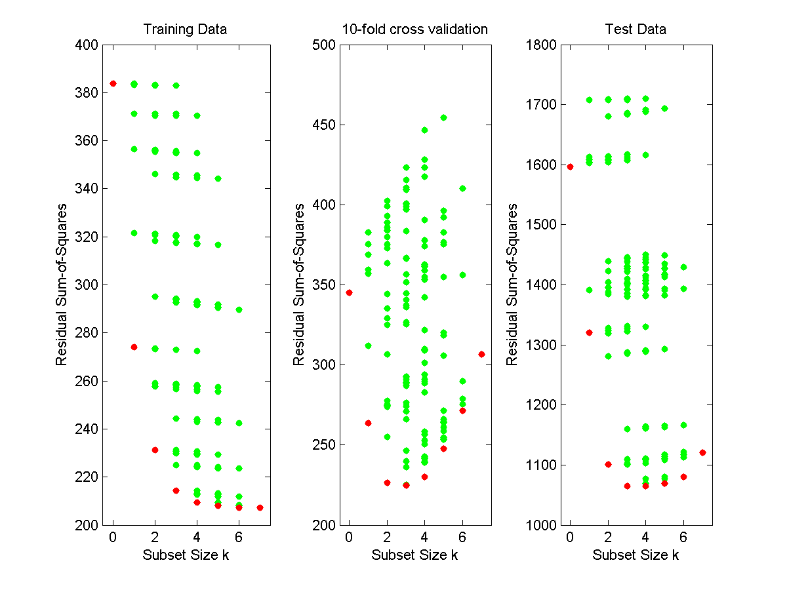
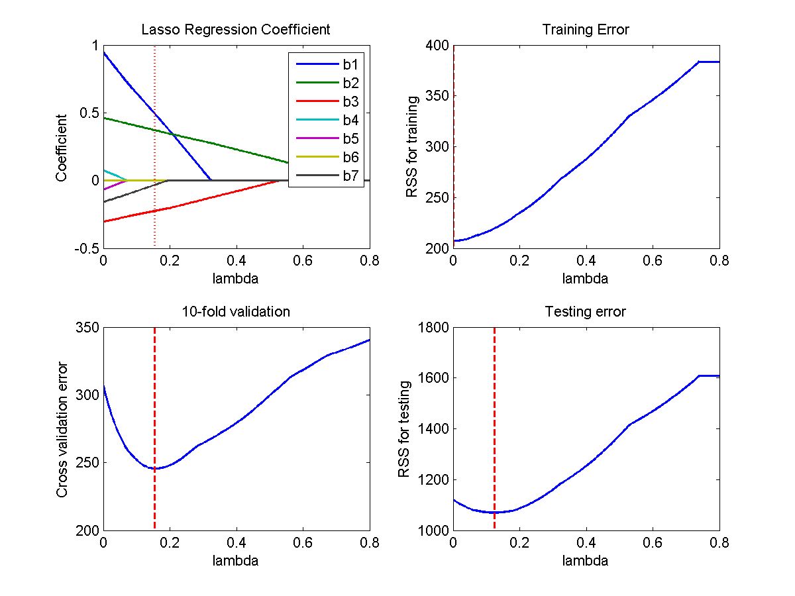
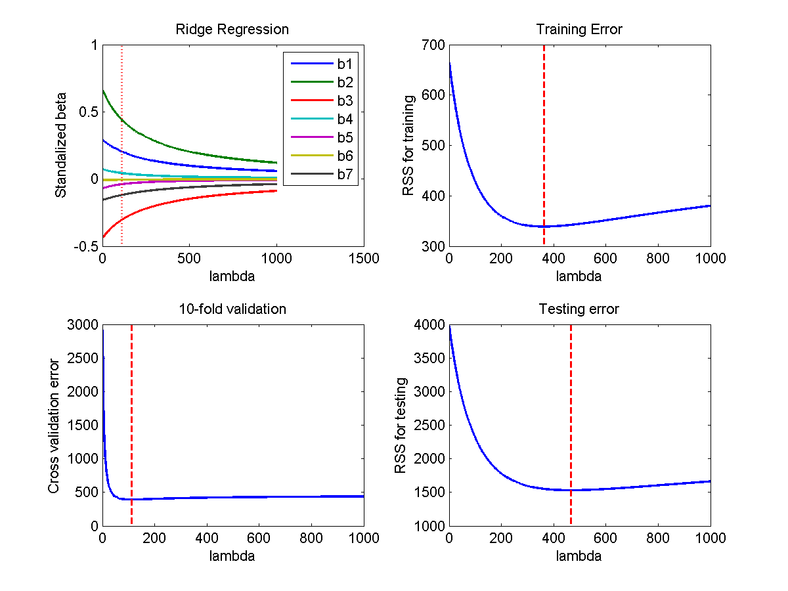
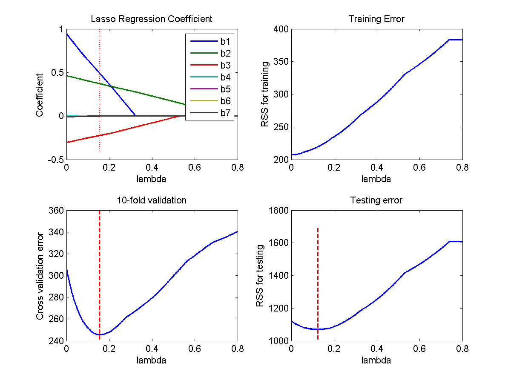
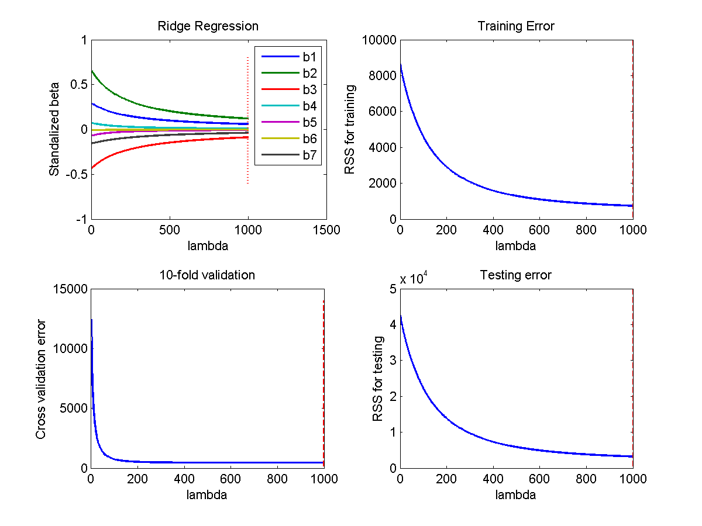

Data with meaningful X was constructed in the following way:
The linear function: y = 0.66*x1 + 0.41 * x2 - 0.3 * x3 + ERROR
x1, x2 and x3 were generated randomly according to the following rule:
Four additional NOISY variables were added to the dataset. All of the four noisy values were generated using normally distrubted numbers.
Two VARIANCE variable were constructed based on the dataset. One is a complete replicate of the meaningful variable x1, and the other is a mirror of the noisy variable x5 .
The correlation between different error and subset size is graphed here:
Based on the validation and test error, subset with 3 variables (x1, x2, and x3) can and will sufficiently explain the result. The coefficients for these three variables are: 0.9533 0.4544 -0.3266, respectively, with an intercept of -0.1636. Increasing subset size (>3) actually increases test error. The coeffcients for x2 and x3 almost faithly represent the underlying true linear model, but the coefficent for x1 is ~0.3 larger than the true one. This difference is due to the noise/error introduced to y. Since the value of x1 is from 0 to 1 and the error is also from 0 to 1, it is reasonable that linear regression use some of x1 to explain the error.
The correlation between coefficients and lambda, as well as error with lambda, are graphed here:
Note: In the lasso regression coefficient graph, dashed line indicates the lambda producing the smallest cross-validation error. In the other three graphs, dashed line indicates the lambda producing the smallest error for that particular group.
Lasso regression is able to pick four meaningful variables (x1, x2, x3, x7) instead of three. Based on the result of cross validation, the coefficients for the four meaningful variables are:
0.4904 0.3708 -0.2254 -0.0335
, respectively. However, it is worthwhile to notice that the coefficent for x7 is considerably smaller than the other variables. Another thing to notice is that there is a difference in optimal lambda for training error and test error. However, this difference does not result in a difference in meaningful variable choice.
The correlation between coefficients and lambda, as well as error with lambda, are graphed here:
Note: In the ridge regression coefficient graph, dashed line indicates the lambda producing the smallest cross-validation error. In the other three graphs, dashed line indicates the lambda producing the smallest error for that particular group.
Ridge regression use standarlized X to compute coefficient. As lambda increases, the coefficents center towards 0, and the difference between any two coefficient becomes smaller. This is due to the squared beta in the formula, which pushes beta to equal to each other. Optimal lambda from cross validation gives the coefficients:
0.2020 0.4377 -0.3042 0.0431 -0.0389 -0.0062 -0.1188
It is reasonable to pick x1, x2, x3 and x7 as the meaningful variables since they have relatively larger coefficients. However, optimal lambda from test error gives the coefficients:
0.1025 0.2132 -0.1545 0.0176 -0.0150 -0.0034 -0.0650
It may depend on experience/expected outcome to do feature selection using ridge regression.
Using regular linear regression will not give an unique coefficient set for this because of singular matrix X.
For lasso regression, adding an additional variance variable produces the following coefficient (lambda chosen based on cross validation):
0.4904 0.3708 -0.2254 0 0 0 -0.0335 0
This means that the variance coefficent was determined as ZERO.
For ridge regression, adding an additional variance variable produces the following coefficient (lambda chosen based on cross validation):
0.1204 0.4132 -0.2910 0.0421 -0.0373 -0.0078 -0.1125 0.1204
This means that the variance coefficent was determined as the SAME of its equivalent variable. This is due to the squared beta item: only when the two coefficients are the same, sum of the squared beta can be smallest.
Using regular linear regression will not give an unique coefficient set for this because of singular matrix X.
For lasso regression, adding an additional variance variable produces the following coefficient (lambda chosen based on cross validation):
0.4904 0.3708 -0.2254 0 0 0 -0.0335 0
This means that the variance coefficent was determined as ZERO.
For ridge regression, the coefficient for adding an additional variance variable produces the following coefficient(lambda chosen based on cross validation):
0.2010 0.4352 -0.3029 0.0424 -0.0236 -0.0067 -0.1177 0.0236
This means that the variance coefficent was determined as the MIRROR of its mirror variable (-0.0236 vs 0.0236). This is due to the squared beta item: only when the two coefficients are the same, sum of the squared beta can be smallest.
For the following data, all the 4 noisy variables were increased 20 fold. So the noisy values vary from 0 to 20.
The correlation between different error and subset size is graphed here:
The correlation between coefficients and lambda, as well as error with lambda, are graphed here:
Note: In the lasso regression coefficient graph, dashed line indicates the lambda producing the smallest cross-validation error. In the other three graphs, dashed line indicates the lambda producing the smallest error for that particular group.
The correlation between coefficients and lambda, as well as error with lambda, are graphed here:
Note: In the ridge regression coefficient graph, dashed line indicates the lambda producing the smallest cross-validation error. In the other three graphs, dashed line indicates the lambda producing the smallest error for that particular group.
Increased noise did not impact brute force. For lasso regression, it is still able to produce the right choice. One considerable change is that the coefficients for noisy variables are significantly decreased. However, ridge regression cannot produce the correct anwser. Large noise pushes the coefficents to considerably small values in L2 regularization.